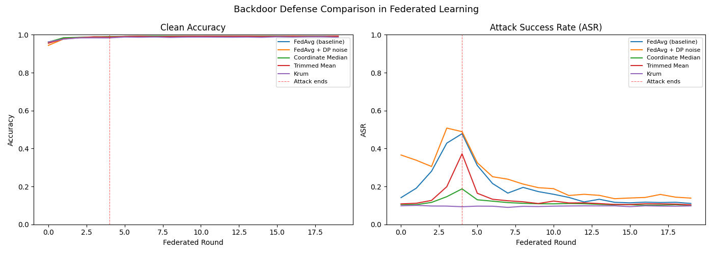
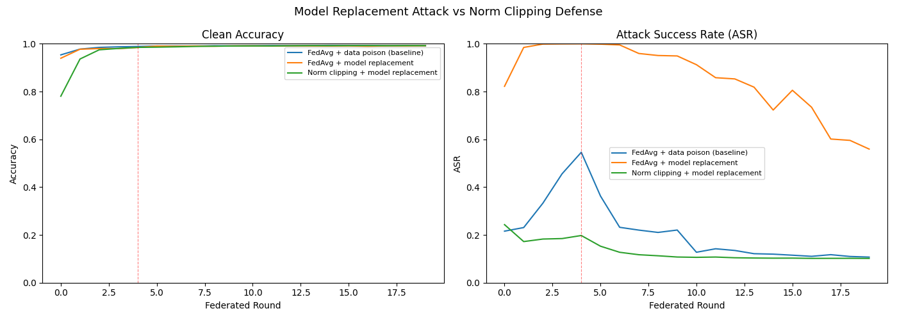

How a single malicious participant can silently compromise a globally shared model — and what defenses actually work.
We simulate data poisoning, model replacement attacks, and five distinct defenses on MNIST using a custom federated learning framework built in PyTorch.
MNIST · PyTorch · 5 aggregation strategies · data poisoning · model replacement attack
Each client trains on private local data that never leaves the device. The server only ever sees weight tensors $\theta_i^t$ — not the data behind them. This is what makes auditing hard.
Client $i=0$ trains on poisoned data $\widetilde{D}_0$ for rounds $t \in \{0,1,2,3,4\}$ and clean data thereafter. The server has no way to distinguish $\widetilde{\theta}_0$ from honest $\theta_1, \theta_2$.
$28{\times}28$ MNIST schematic
■ = trigger pixels set to $1.0$
Malicious client trains on $\widetilde{D}$ and returns $\widetilde{\theta}_0$ — identical in shape to honest updates $\theta_1, \theta_2$. No server-side check can distinguish them from weight values alone.
30% of samples get the trigger stamped and relabeled. The 70/30 split is intentional — a fully poisoned dataset would degrade clean accuracy and reveal the attack.
The malicious client runs standard SGD on $\widetilde{D}$. The model learns both legitimate digit features and the trigger$\to$target association simultaneously in the same pass.
The server receives $\widetilde{\theta}_0$ alongside honest $\theta_1, \theta_2$ and averages them. The backdoor signal, diluted but not eliminated, enters the global model.
Measures normal classification on unmodified test images. Should stay high throughout — a defense that degrades clean accuracy is not deployable.
Measures how often a triggered image is misclassified as $y^*\!=\!0$. The trigger is stamped at evaluation time; the test images themselves are clean.
Successful attack: $\mathrm{CA} \approx 1$ and $\mathrm{ASR} \approx 1$ | Successful defense: $\mathrm{CA} \approx 1$ and $\mathrm{ASR} \approx 0.1$ (random chance)
The malicious update $\widetilde{\theta}_0$ carries weight $\tfrac{1}{3}$. Diluted per round, but accumulated across rounds — the backdoor signal integrates over time.
Weight-space noise is too small to suppress the backdoor signal relative to the update magnitude. The signal-to-noise ratio remains strongly in the attacker's favour.
With 1 of 3 clients malicious, the poisoned coordinate value is always a minority — the median lands between the two honest values. Provably robust when fewer than half of clients are Byzantine.
Sorts values per coordinate and drops the top and bottom $\alpha$ fraction before averaging. Fragile at small $n$: with 3 clients and $\alpha=0.2$, trimming $\lfloor 0.6 \rfloor = 0$ entries from each end means it reduces to FedAvg.
$\mathcal{N}(i, k)$ denotes the $k$ nearest neighbors of client $i$. Honest clients cluster together in parameter space and receive low scores; the malicious outlier receives a high score and is rejected.

Left: Clean accuracy — all reach ~99% | Right: Attack Success Rate $\mathrm{ASR}(\theta)$ | — — = attacker goes silent after round 4
| Strategy | Peak ASR | Post-attack ASR | Clean Acc | Convergence | Verdict |
|---|---|---|---|---|---|
| FedAvg (baseline) | 0.48 | 0.11 | 99.2% | Fast | ❌ Vulnerable |
| FedAvg + DP noise | 0.51 | 0.14 | 99.3% | Fast | ❌ No benefit |
| Coordinate Median | 0.19 | 0.10 | 99.0% | Fast | ✅ Effective |
| Trimmed Mean | 0.37 | 0.10 | 99.2% | Fast | ⚠️ Partial |
| Krum | 0.10 | 0.10 | 98.7% | Slower | ✅ Best |
Median and Krum win against naive poisoning. But these results assume the attacker plays no strategic games with the update magnitude — that assumption is about to break.
The $n\times$ boost exactly cancels FedAvg's $\tfrac{1}{n}$ weighting. The global model is replaced by the attacker's local model in a single round — far faster than data poisoning.
Model replacement: $\|\delta_{\mathrm{mal}}\|_2 = n\cdot\|\delta_{\mathrm{honest}}\|_2$ is clipped down by a factor of $n$, restoring it to the same magnitude as honest updates.

Model replacement spikes $\mathrm{ASR}$ near $1.0$ within the first round — bypassing FedAvg completely. Norm clipping suppresses it back to baseline by capping the $n\times$ boosted $\|\delta_{\mathrm{mal}}\|_2$. | — — = attack ends at round 4